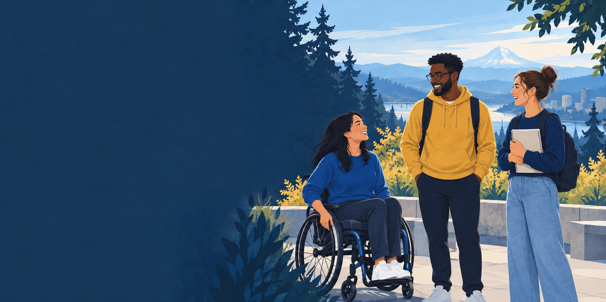
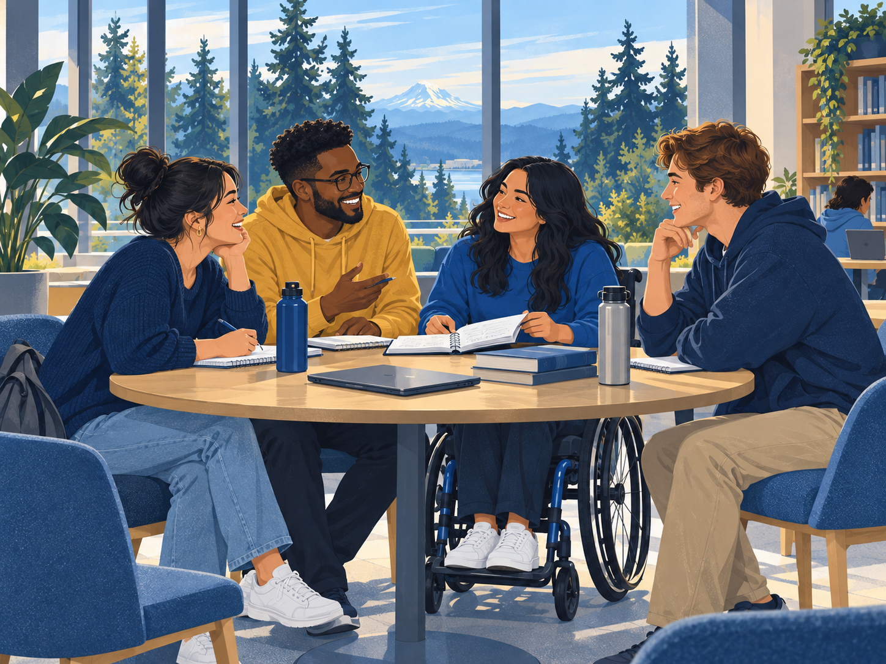

Physical medicine & rehabilitation
Explore a specialty.
Find your community.
A place for OHSU students to explore PM&R, connect with one another, and discover an interest in rehabilitation medicine.
Explore our groupAbout the group
Curiosity is a good
place to start.
Whether you’re just learning about PM&R or considering it as a career, the Student Interest Group is a starting point for exploring the field together.
Our focus is student connection and shared learning about rehabilitation medicine. You don’t need prior experience in PM&R to be interested.
Learn together
What’s coming up

Get involved
Make room for
a new interest.
Interested in connecting with other students exploring PM&R?
Membership and contact information will be added here once the group’s communication channels are ready.
Check back for ways to join and hear about upcoming activities.